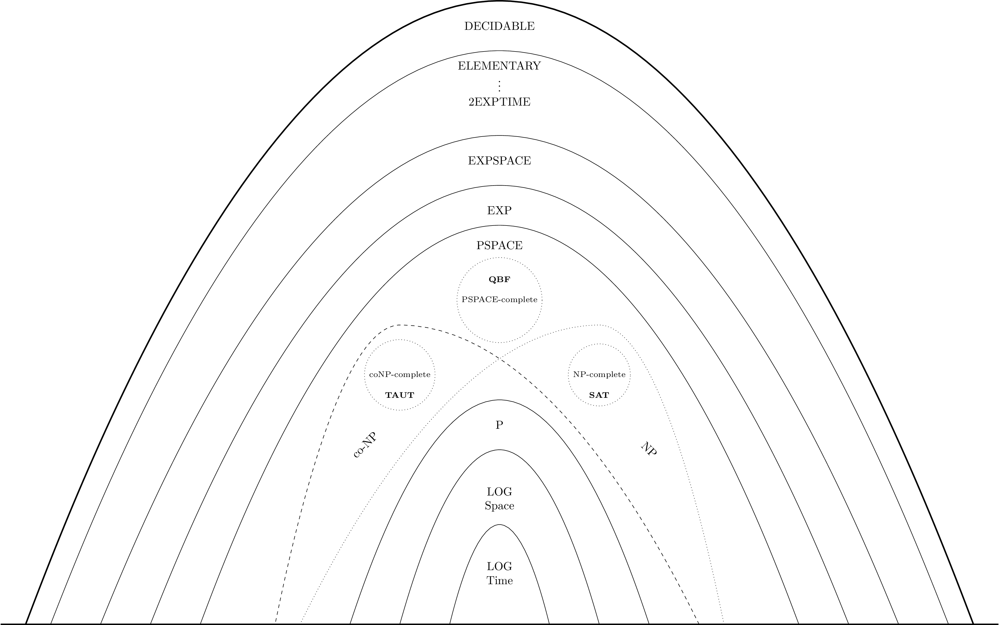

In standard computation/complexity theory, we study decision problems. That is, computational problems that have a yes/no answer. These types of problems can be formulated in terms of a corresponding language, which is a set of strings \(w \in \Sigma^*\), where \(\Sigma\) is some finite alphabet i.e. some finite set of symbols.
Formally, a language is a set of strings \(w \in \Sigma^*\), where \(\Sigma\) is some finite alphabet i.e. some finite set of atomic symbols. A language \(L\) is regular if it can be accepted by some deterministic finite automaton (DFA). That is, there is some DFA that can determine, for any string \(w \in \Sigma^*\), whether \(w \in L\) or \(w \notin L\). A regular expression is one way to represent a regular language. It provides a concise form for expressing regular languages i.e. it defines a language as the set of strings accepted by that regular expression.
Any regular expression can be converted into an equivalent nondeterministic finite automaton (NFA), or an equivalent DFA. Recall that the translation from an NFA to DFA may, in the worst case, lead to an exponential blow up in the number of states. See Thompson’s Construction algorithm for transforming a regular expression into an equivalent NFA, which can then be converted to a DFA e.g. via the powerset construction.
We say that a language is decidable if there exists a Turing machine \(M\) such that \(M\) accepts every input \(w \in L\) and always halts. We say that a language is recognizable if there is a Turing machine \(M\) that accepts every input \(w \in L\) but it may reject or loop forever on inputs \(w \notin L\). Note that for any Turing machine on a given input, there are three possible outcomes: (1) accept, (2) reject, or (3) loop forever. A basic undecidable problem is the \(A_{TM}\) problem, which asks, given a Turing machine \(M\) and input \(w\), does machine \(M\) accept on \(w\)? Note that the class of recognizable languages is more general than the class of undecidable languages. That is, any language that is decidable is recognizable, but the converse is not necessarily true. Decidability is in some sense the coarsest possible notion of complexity i.e. it is only concerned with whether there exists any general algorithm for solving a problem, regardless of how fast/slow it is. Undeciable problems are, in some sense, outside the realm of what can be computed by a single, generic algorithm i.e. one that successfully terminates on all possible inputs.
The class \(P\) is the set of languages for which there exists a Turing machine (i.e. an algorithm) that can decide \(P\) in polynomial time \(O(n^k)\), for some positive constant \(k\). The class \(NP\) is defined as the set of languages for which there exists a polynomial time verifier. Formally, a language \(L\) is in \(NP\) if there exists a Turing machine \(V\) (a verifier) such that, for any input \(w \in L\) there exists a certificate \(c\) such that \(V\) accepts \(\langle w,c \rangle\) and runs in polynomial time. Note that the size of the certificate can only be polynomial in the size of the input \(w\), since the verifier machine only has a polynomial time run-time budget. At a high level, \(NP\) is the class of languages for which there exists an efficient way to verify solutions to a given problem instance. There may not be an efficient algorithm to decide the answer to a given instance though. It is not known for certain, however, whether there are (or aren’t) polynomial time algorithms for solving problems in \(NP\). This is the famous \(P\) vs. \(NP\) problem. It is believed that problems in \(NP\) do not have efficient (polynomial time) algorithms, but this is not formally proven.
There are some problems in the class \(NP\) that are the “hardest” problems in \(NP\). We call these problems \(NP\)-complete. Formally, we say that a language \(A\) is \(NP\)-complete if \(A \in NP\) and every language \(B \in NP\) is polynomial time reducible to \(A\). For two languages \(A\) and \(B\), we say that \(A\) is polynomial time reducible to \(B\) if there is a polynomial time converter \(R_{A\rightarrow B}\) that converts an input \(w_A\) to an input \(w_B = R_{A\rightarrow B}(w_A)\) so that \(w_B \in B \iff w_A \in A\). So, if a problem is \(NP\)-complete, it means that every problem in \(NP\) can be reduced to it i.e. we can take an input of any problem in \(NP\), convert it to an input for the NP-complete problem in a way that preserves correctness. So, this means that if we solve one \(NP\) complete problem in an efficient (polynomial time) algorithm, then all \(NP\) problems are efficiently solvable.
The canonical \(NP\)-complete problem is the SAT problem i.e. checking whether a boolean formula is satisfiable. The Cook-Levin theorem shows that SAT is \(NP\)-complete. With this knowledge, we can prove other problems \(NP\)-complete. Since we know that any \(B \in NP\) can be reduced to an \(NP\)-complete problem \(A\), we can show that \(B\) is \(NP\)-complete by showing that \(A\) is reducible to \(B\). That is, we establish that \(A\) is reducible to \(B\) and \(B\) is reducible to \(A\), so the problems are “equivalently" hard. Note that there are some problems in \(NP\), however, that are not \(NP\)-complete. Ladner’s theorem establishes this i.e. it proves the existence of problems that are in \(NP\) but not in \(P\) and are not \(NP\)-complete. This class is called \(NP\)-intermediate. The construction used in this theorem is complicated, though, and not necessarily “natural”. There are problems that are suspected to be in \(NP\)-intermediate i.e. they are in \(NP\) but have not been shown to be in \(P\) or be \(NP\)-complete e.g. integer factorization.
I believe that one straightforward way to characterize the difference between “polynomial" non-deterministic Turing machines (NP) and “exponential" non-deterministic Turing machines (NEXP) is to consider the maximum depth of the computation tree branches. In NP, we are allowed to use non-deterministic machines with paths of polynomial length, whereas in NEXP, we are allowed to use non-deterministic machines with exponentially long paths.
Note that we can also use the nondeterministic Turing machine perspective as an alternate way to view the difference between classes like \(NP\) and \(coNP\). \(NP\) consists of problems that have some accepting path out of all branches on the nondeterministic computation, whereas problems in \(coNP\) are those for which all paths must accept. For example, satisfiability vs. unsatisfiability.
For any decision problem, we can establish both upper bounds and lower bounds on its complexity. Recall that a decision problem is formulated in terms of a language \(L\), consisting of a set of strings. The decision problem for a given language \(L\) is to determine whether \(w \in L\) for some given string \(w\).
An upper bound makes a statement about the maximum hardness/complexity of the problem, and a lower bound makes a statement about the minimum easiness of the problem. Establishing an upper bound is typically easier, since you only need to provide a concrete algorithm that solves the problem in some worst case running time (i.e. show there exists an algorithm). Establishing a lower bound is generally much harder, since you need to show that there exists no algorithm that can solve the problem more efficiently than a certain complexity class (i.e. show no algorithm exists).
At a very high level, to establish a (worst-case) lower bound on a given problem, we can generally view this as establishing a statement of the form \[\begin{aligned} \forall A \, \exists x : A(x) \text{ takes a while to compute}\end{aligned}\] where \(A\) is any possible algorithm. More concretely, we might want to, for example, show that \(A\) takes at least \(\Omega(n^2)\) steps on input \(x\). Typically, if we want to reason about any possible algorithm, we need to fix some precise model of computation. For example, we might only consider the query complexity of an algorithm e.g. measure its complexity in terms of number of bits of the input that it queries during execution. One technique for proving lower bounds is to use an adversary-based argument as an approach to construct the problematic input \(x\) to any given algorithm \(A\). We can’t select this input up front, so we need to construct it adaptively i.e. in response to the queries made by the algorithm. By showing the existence of an appropriate adversary that causes the algorithm to run for at least a certain number of steps, we can establish a lower bound. This isn’t the only way to establish lower bounds e.g. we can also use reduction argument, similar to how we prove decidability, NP-completeness, etc.
For comparison based sorting algorithms, we can show a lower bound of \(\Omega(n \log{n})\) for the worst case complexity. That is, no comparison based sorting algorithm can exist with worst case complexity better than \(n \log{n}\). As another example, one of the best known algorithms for 3-SAT as of 2019 has a numerical upper bound of something around \(O(1.307^n)\) (Hansen et al. 2019). There exists no known, general algorithm that can solve 3-SAT in polynomial time. But, it has also not been proven that such an algorithm doesn’t exist. It seems that the best known lower bounds for SAT sit somewhere in the polynomial range of \(n^{1.801}\), though this has some other caveats about “time-space tradeoffs” which I don’t fully understand (“What are the best current lower bounds on 3SAT?” n.d.). Proving that SAT, for example, had an exponential (or even super polynomial) lower bound would establish that \(P \neq NP\), since SAT is NP-complete, and this would serve to separate \(P\) from \(NP\). Of course, one could also prove \(P=NP\) by simply giving a polynomial time algorithm for SAT i.e. by dropping the upper bound from exponential to polynomial. This might be “easier”, in the sense that you would only have to find a single algorithm, but it may be “harder" in the sense that P=NP may not actually be true.

TODO: Polynomial hierarchy.
A random variable is a variable whose possible values are numerical outcomes of a random phenomenon. Each possible outcome is assigned some probability, with the condition that the sum of probabilities overall possible outcomes must sum to 1.
See (Doerr 2019) for a reference on some probabilistic tools.
For any two random variables \(X,Y\), it holds that \[\begin{aligned} \mathbb{E}[X + Y] = \mathbb{E}[X] + \mathbb{E}[Y]\end{aligned}\]
For a discrete random variable \(X\) taking values in some set \(\Omega \subseteq \mathbb{R}\), its expectation is defined as \[\begin{aligned} \mathbb{E}\left[X\right] = \sum_{\omega \in \Omega} \omega \cdot Pr\left[X=\omega\right]\end{aligned}\] and its variance is defined as \[\begin{aligned} \text{Var}(X) = \mathbb{E}\left[(X - \mathbb{E}\left[X\right])^2\right]\end{aligned}\] That is, expectation is essentially a weighted sum of the values that the random variable can take on, where each value is weighted by the probability of that event occurring, and variance is essentially a measure of the average deviation of the variable from its expectation/mean.
Markov’s inequality is an elementary large deviation bound valid for all non-negative random variables. Let \(X\) be a non-negative random variable with \(\mathbb{E}\left[X\right] > 0\). Then, for all \(\lambda > 0\) \[\begin{aligned} Pr(X \geq \lambda \mathbb{E}\left[X\right]) \leq \dfrac{1}{\lambda}\end{aligned}\] That is, this establishes a bound, for some given parameter \(\lambda\), on how likely a random variable is to be far away from its mean. For example, if \(\lambda = 10\), then this means that the probability that \(X\) is greater than 10 times its mean is \(\leq \frac{1}{10}\). Note that this bound doesn’t take into account anything about the actual distribution (only about its mean), so it may serve as only a rough estimate.
Let \(X\) be a random variable with \(\text{Var}(X) > 0\), and where \(\sigma = \sqrt{\text{Var}(X)}\) is its standard deviation. Then, for all \(\lambda > 0\) \[\begin{aligned} Pr \left[ \left| X - \mathbb{E}\left[X\right] \right| \geq \lambda \sigma \right] \leq \dfrac{1}{\lambda^2}\end{aligned}\] This bound tells us something about how far a random variable is from its expectation, in terms of the variance of the RV. That is, it puts a bound on the probability of how many (\(\lambda\)) standard deviations (\(\sigma\)) away from its mean \(X\) may be.
Let \(X_1,\dots,X_n\) be independent random variables in \([0,1]\). Let \(X = \sum_{i=1}^n X_i\) and let \(\mu = \mathbb{E}[X]\). Then
Upper Tail \(Pr[X \geq (1+\delta)\mu] \leq \exp\left({-\tfrac{\delta^2}{2+\delta}\mu}\right), \quad \forall \delta > 0\)
Lower Tail: \(Pr[X \geq (1-\delta)\mu] \leq \exp\left({-\tfrac{\delta^2}{2}\mu}\right), \quad \forall \delta \in [0,1]\)
The two tail bounds above can be combined into the following (slightly weaker) two-sided tail bound:
Two-sided bound: \(Pr[|X-\mu| \geq \delta \mu] \leq 2 \exp\left({-\tfrac{\delta^2 \mu}{3}}\right), \quad \forall \delta \in [0,1]\)
We can also derive the additive form of the bound by setting \(t=\delta \mu\):
Additive Chernoff bound: \(Pr[|X-\mu| \geq t] \leq 2 \exp \left( {-\tfrac{t^2}{3 \mu}} \right), \quad \forall t \in [0,\mu]\)
Let \(E_1,\dots,E_n\) be arbitrary events in some probability space. Then, \[\begin{aligned} Pr \left[ \bigcup_{i=1}^n E_i \right] \leq \sum_{i=1}^n Pr[E_i]\end{aligned}\] That is, for a set of events \(E_1,\dots,E_n\), the probability of at least one event occurring is less than or equal to the sum of the probabilities of the individual events. We can think of the union bound with a simple set-based analogy i.e. if events are viewe as subsets of a potential sample space, then the union of these sets can be no larger than the sum of the individual sets (i.e. since the sets may have some non-empty intersections).